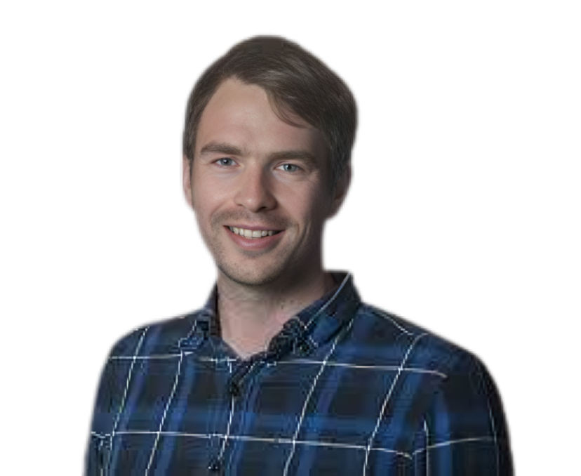

Patrick Farrell
University of Oxford

Boris Andrews
University of Oxford

Endre Süli
University of Oxford

Bart Ripperda
University of Toronto

Sean Ressler
University of Toronto

Carlos Simão Ferreira
Delft University of Technology

Marc Gerritsma
Delft University of Technology

Alessandro Abate
University of Oxford

Daan Pool
Delft University of Technology